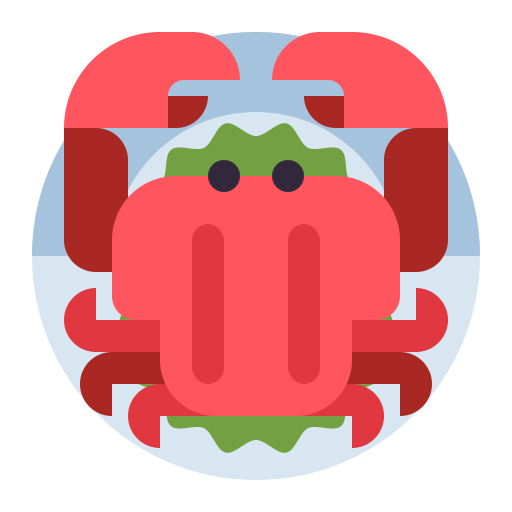
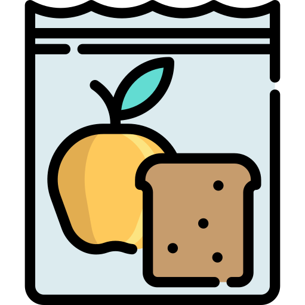
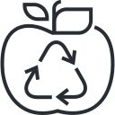

Choose sustainable seafood
Overfishing and unsustainable fishing practices threaten marine ecosystems. Choose seafood that is sustainably sourced and harvested to protect ocean health.

Eat More Plant-Based Meals
Plant-based diets have a lower environmental impact. Incorporating meatless meals even a few days a week can make a big difference.

Reduce Food Waste
Plan meals ahead, use leftovers creatively, and store food properly to extend shelf life and minimize unnecessary waste.

Compost Food Scraps
Turn food waste into nutrient-rich compost instead of sending it to landfills. It enriches soil, reduces methane, and completes the food cycle.